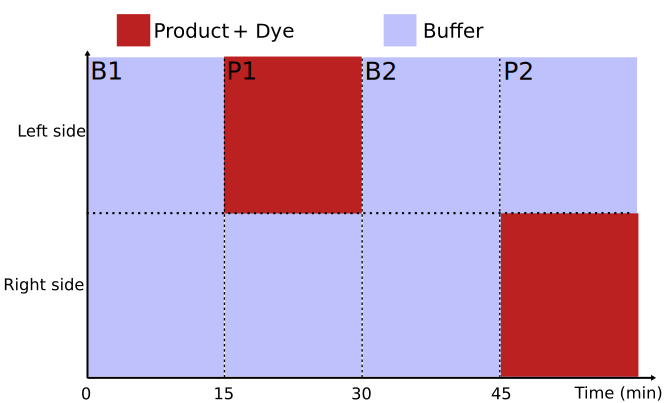
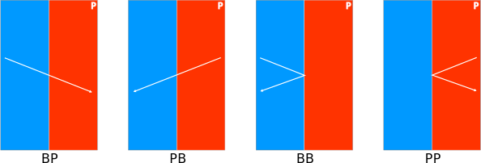
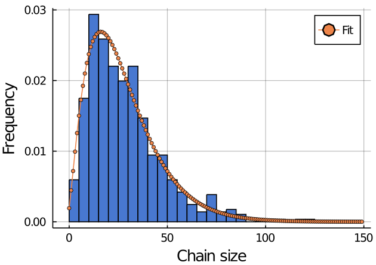
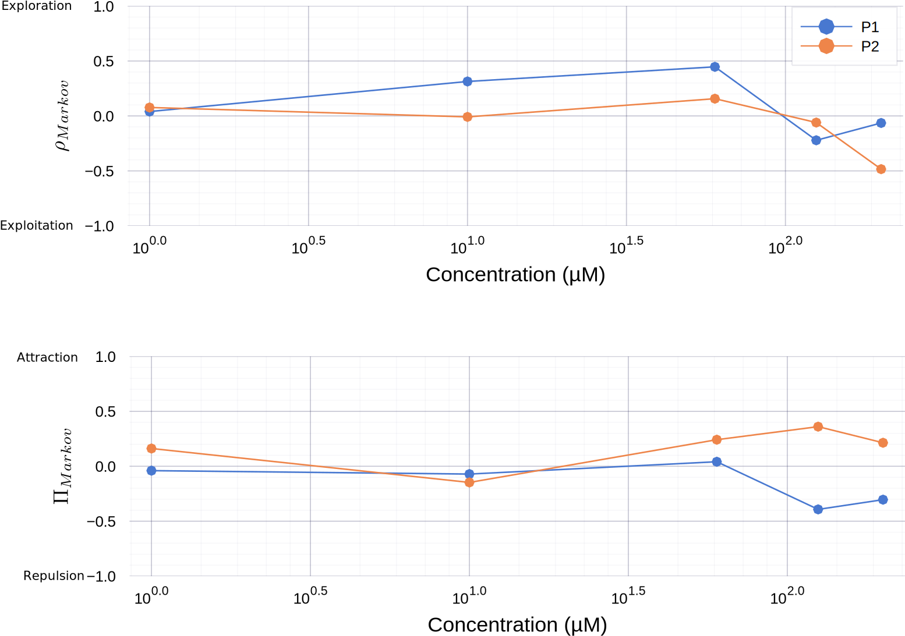

Dual data analysis
Experimental protocol
Analysis
Two state Markov model
$p = \frac{n_{BP}}{n_{BP} + n_{BB}}$ $b = \frac{n_{PB}}{n_{PB} + n_{PP}}$Behavior indicator
$ \rho_{Markov} = 2Min(p,b)-1 $
- $\rho_{Markov} = 1$ pure exploration: fish crosses interface
- $\rho_{Markov} = -1$ pure exploitation: fish stays on the same side
- $\rho_{Markov} = 0$ mixed behavior
- Behavior indicator
- NOT a preference indicator
Preference indicator
$ \Pi_{Markov} = p-b $
- $\Pi_{Markov} = 1$ attraction
- $\Pi_{Markov} = -1$ repulsion
- $\Pi_{Markov} = 0$ neutral
Simulation
- Chain size from the experimental distribution
- p and b probabilities
Simulation

- All $(p,b)$ are not accessible: chain size & p and b rational numbers
- Strong preference => exploitation
ATP
ATP
Conclusion Markov model
- Capture behavior
- Capture preference